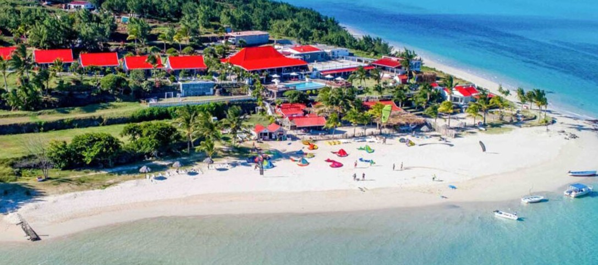
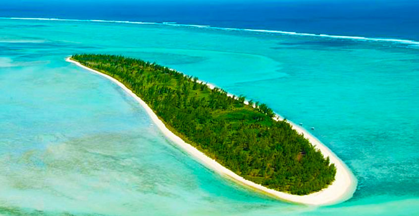
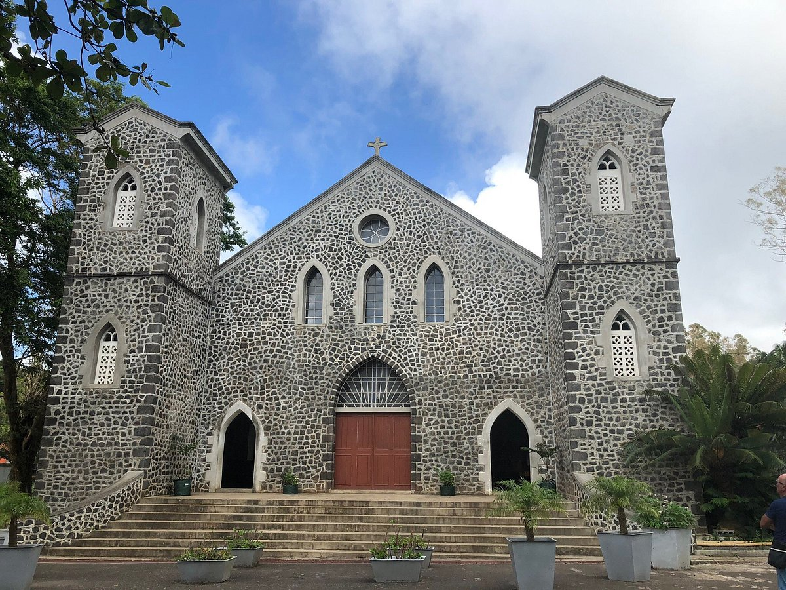
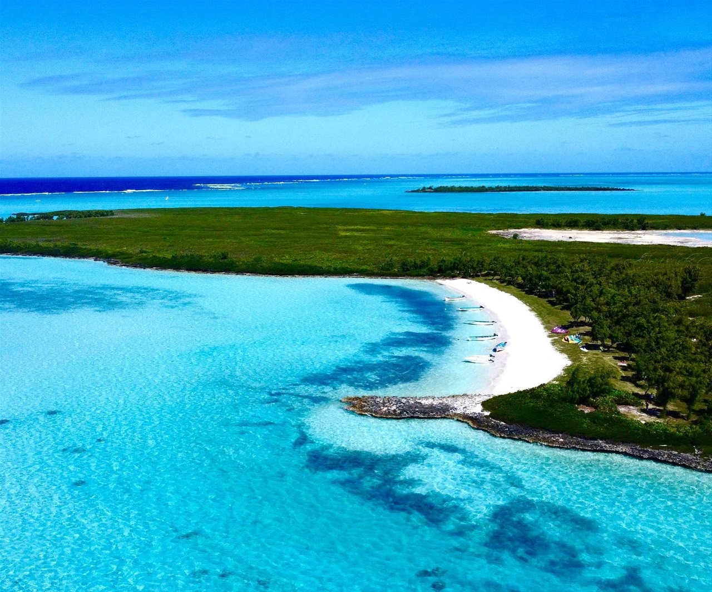

Mourouk Beach
south-east coast
Mourouk Beach is famous for its beautiful scenery and is one of the best places for kitesurfing.

south-east coast
Mourouk Beach is famous for its beautiful scenery and is one of the best places for kitesurfing.

south-west coast
A protected island with crystal clear water and a large number of seabirds.

central regions
The largest church in Rodrigues, well known for its history across the indian ocean.

south
A peaceful island destination,perfect for relaxation and nature lovers.